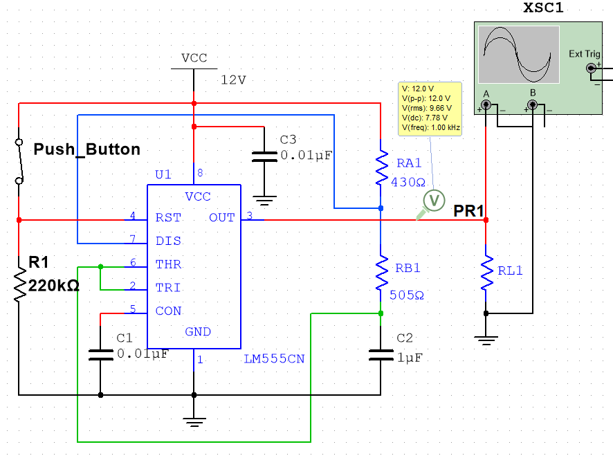
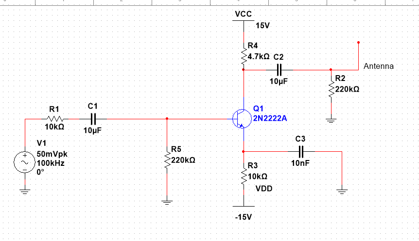
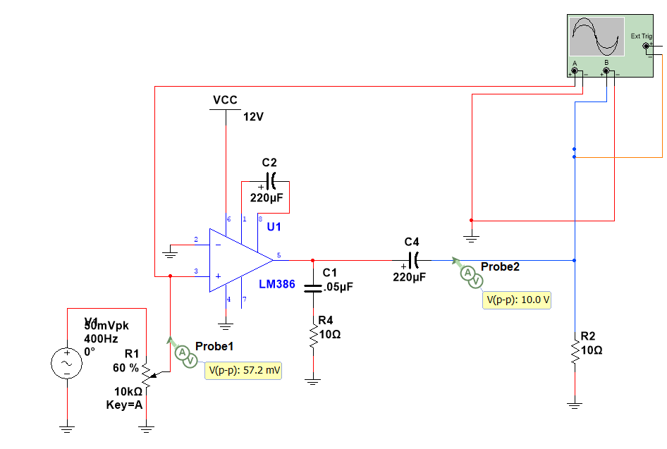
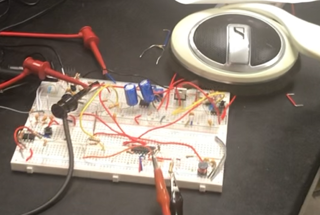

A 100 kHz Amplitude Modulator Circuit With Basic Circuit Components
May 22, 2022
Bradlee Harrison
The primary components involved in the process are a microphone, LM386 audio amplitifer, operational amplifier , 2N222A MOSFET transistor, a speaker, and resistors, inductors, and capacitors.
Description
In this project, I designed a basic communication system consisting of a transmitter and receiver that is capable of processing an input signal through an amplitude modulator and transmitting it through a medium. The process that i use in modulating and demodulating the signal is very similar to the process of standard AM radio transmission!
Transmitter
For a communication system, there are many possible transmitter types. For the sake of simplicity, I designed an AM transmitter that performs Double-Sideband Large Carrier (DSB-LC) modulation. This transmitter takes an audio signal, mixes it with a modulating sinusoid, and adds a large high-frequency carrier to create a DSB-LC signal. Mixer circuits and summer circuits are important to design and configure throughout the scope of this project.
The signal will also have to be amplified to a sufficiently large level for transmission. For this, an active filter between 150 to 15kHz (the range of normal human hearing) was necessary to design.
Receiver
To receive this signal, I use an envelope detector consisting of a diode and an RC circuit to recover the envelope of the DSB-LC signal, which contains the demodulated original signal. The received signal will have to be amplified from a smaller signal level, and an amplifier between the frequencies 150 Hz to 15kHz will be necessary for a significant output to be detected. Finally, this received signal must be output through a speaker in order to reproduce the sound originally input into the transmitter.
Methods
Throughout the implementation of this project, I faced many problems and found several interesting solutions. The first step the design was in creating a useful transmitter, capable of generating and modulating an audio signal. For this transmitter, I first designed an astable 555-timer to generate a test signal of a 1kHz square wave. This signal could be triggered with a push-button connected to the reset pin.
555 Timer Circuit to Generate Test Signal

Aside from the 555-timer signal for testing, a small electret microphone was also used as the input device, capturing audio signals from a headphone speaker that was placed next to it. Using the microphone, these analog signals are converted to electrical signals.
Amplitude Modulator
The electrical signals are then fed into an amplitude modulator. The modulator multiplies the input signal with a carrier signal of frequency 100kHz, resulting in an amplitude-modulated signal.
Amplifier
The modulated signal is then fed into an amplifier to strengthen the signal for transmission.

Demodulator
Once the signal is received, it is fed into an envelope detector, which demodulates the signal. This component uses a diode and LC circuit to remove the carrier signal, leaving only the original audio signal.
Speaker
Finally, the demodulated signal is fed into an audio amplifier to ensure that it's strong enough to drive a speaker. The speaker converts the electrical signals back into audio signals, reproducing the original sound.

Results
The resulting circuit was capable of transmitting and receiving the audio signals over a very short distance. In order to increase the distance of the transmission, an increase in the power of the transmitter would increase the distance that the waves would transmit. However, because the carrier frequency I used, 100kHz, is a lower frequency, there is a potential issue that the low frequency waves could propogate over large distances. As a result, it was necessary to limit the power to very-low wattage. The final circuit put together can be seen in the images below, with the transmitter and receiver:
Transmitter

Receiver